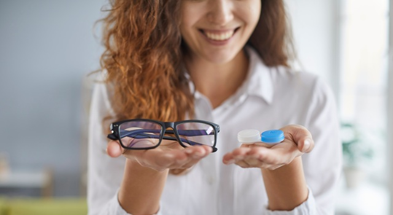

What’s the Real Difference Between Glasses and Contacts?
Eyeglasses offer comfort, simplicity, and easy maintenance. They protect your eyes from dust and wind, never touch your eyes directly, and serve as a stylish accessory for many patients.
Contact Lenses vs Frames: Which Is the Right Fit for You?
Nov 03, 2025
Eyeglasses offer comfort, simplicity, and easy maintenance. They protect your eyes from dust and wind, never touch your eyes directly, and serve as a stylish accessory for many patients.

There’s no single “right” choice, just the right choice for you. Here are six lifestyle-specific factors to consider:

For patients managing dry eye, a history of eye infections, or recovering from an eye injury, glasses may be the safer choice. They don’t require direct contact with your eye and can protect against allergens and wind.
Some people simply don’t like to touch their eyes, and that’s okay. Comfort and confidence in your routine are essential for safe, successful contact lens wear.

For patients who work long hours on screens, wearing glasses with blue-light lenses can reduce fatigue. But for gym goers or weekend adventurers, daily disposables might be the more convenient option.
Frames can express personality and enhance facial features. But contacts let you show off your eyes and wear makeup with no obstruction.
Wearing contact lenses requires regular use of cleaning solutions and replacement of lenses as directed. Glasses just need an occasional wipe with a microfiber cloth—no disinfecting required.
While a single pair of glasses may last for years, disposable contacts are a recurring expense. Be sure to factor in lens type, insurance coverage, and your daily habits.
Absolutely. Many patients rotate between the two on different days.
Home » What’s New » Contact Lenses vs Frames: Which Is the Right Fit for You?
Whether you're a parent juggling school pickups and sports practice, a Houston professional glued to multiple screens, or a retiree exploring the outdoors, your vision correction needs are unique. And when it comes to contact lenses and eyeglasses, it’s not always a simple choice.
At Eye Shop in Texas, we help you make the decision that works for your everyday life.
Contact lenses , on the other hand, offer a wider field of vision, natural eye movement, and freedom from bulky frames. They’re ideal for sports, active lifestyles, and people who want a glasses-free look. Contact lens options , like daily disposables, can also be a convenient solution for busy patients.
Each has its benefits; our choice depends on your personal preferences, health needs, and daily habits.
You might wear contacts during the workday and switch to glasses at home. Or maybe you rely on glasses for most of the week and use contacts only for sports or events. Our eye doctors can help you create a routine that fits your schedule and eye health goals.
At Eye Shop, we don’t believe in one-size-fits-all answers. Our optometrists take the time to understand your full picture: health, habits, and preferences. Whether it’s your first vision glasses prescription or you’re ready to try daily disposables, book your eye exam , and we'll walk you through every option.
Are contact lenses better for sports and outdoor activities?
Yes. Contacts provide unobstructed peripheral vision and won’t move or fog up during activity, making them ideal for active patients.
What are the cons of contacts?
They require proper hygiene and regular use of cleaning solutions and can increase the risk of dry eye or infection if not used correctly.
Are disposable contacts healthier than reusable ones?
Daily disposables reduce the risk of buildup and infection because they’re replaced daily; great for sensitive eyes or teens new to contact lens wearers.
Eye Shop - Located at 13130 Memorial Drive, Houston, TX 77079. Phone: 713-977-8464